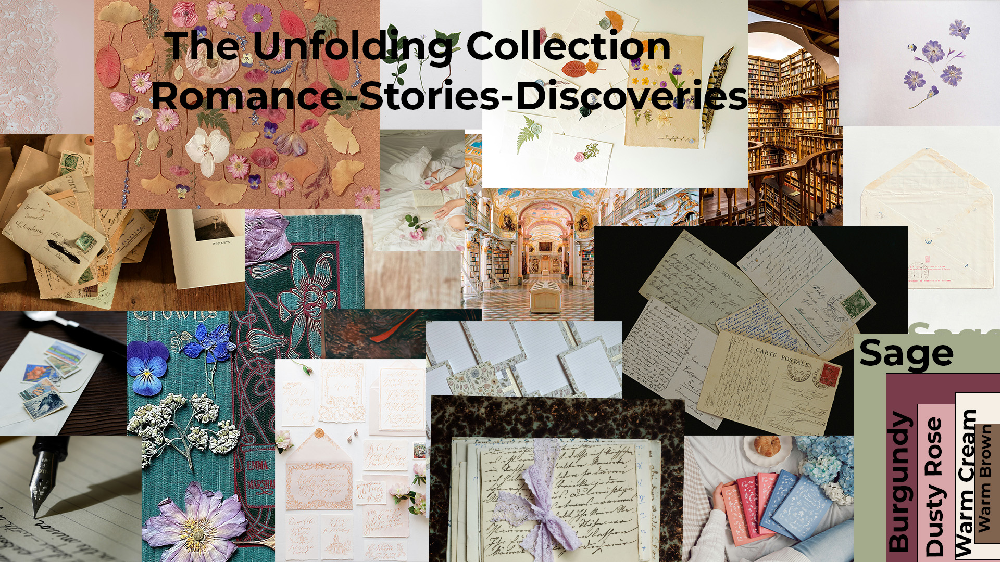

The Unfolding
Collection
The campaign
The Unfolding Collection is a romantic literary campaign celebrating the beauty of stories, love, and discovery through books.
Inspired by the quiet rituals of reading, the campaign brings together books, flowers, handwritten letters, and delicate paper textures. Its visual world feels intimate, nostalgic, and thoughtfully collected—like a treasured letter tucked inside the pages of a favorite novel.
The campaign invites readers to slow down, discover new stories, and reconnect with the emotions that books leave behind.
Moodboard
A romantic visual language built from botanical details, handwritten notes, books, soft fabrics, and warm paper tones.

Color palette
A soft, warm palette with a deep literary burgundy for contrast and emphasis.
Typography
A classic serif paired with a clean sans serif balances literary elegance with modern clarity.
getting lost
in a story.
For campaign titles, expressive headlines, and literary moments.
· DISCOVERY
For labels, supporting information, captions, and small details.
Logomark
The UC lettermark gives the collection a simple, recognizable signature.
Set in a classic serif and framed by a fine circular border, the mark carries the campaign's understated, timeless feeling. Use the burgundy version against warm cream backgrounds.

Every story opens a new world.